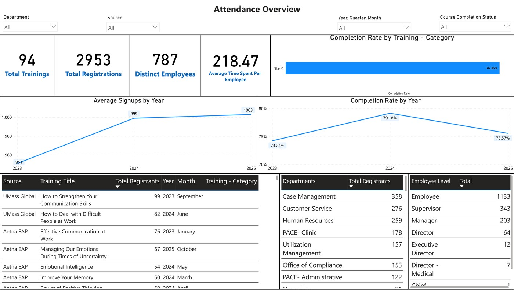

CalOptima Health · HR Training Analytics Intern
HR Training & Development Analytics
Power BI dashboards and survey analysis tracking training participation, completion, and program effectiveness across CalOptima Health.
- 94 trainings
- 2,953 registrations
- 787 employees